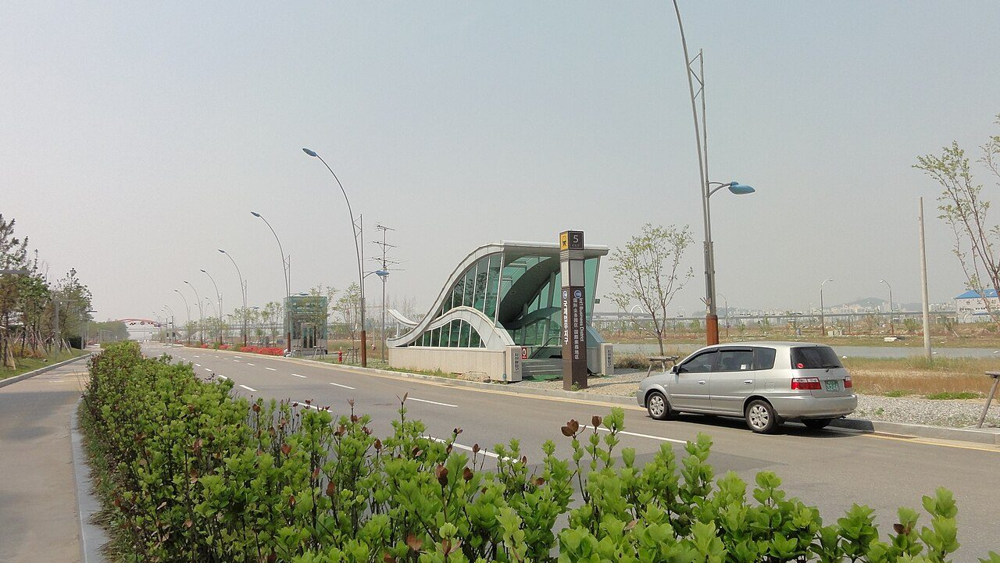

[한중수교 34년⑦] 전국 외투기업의 53%가 인천경제자유구역에 있다
2024년 말 기준 외국인투자기업 367개, 전국 690개의 53.2%가 인천에 모였다
외투기업 고용 3만7368명은 전국 경제자유구역 외투기업 고용의 65.1%다
그런데 2026년 상반기 투자유치 실적은 연간 목표의 10%에 그쳤다
AI경제저널=김갑봉 기자 | 2024년 이 연재는 중국 장쑤성 옌청이 인천경제자유구역을 본떠 개발계획을 세웠다고 전했다. 본보기가 된 쪽의 2026년을 본다. 숫자는 압도적이고 흐름은 불안하다.

※ 이 연재는 2024년 인천투데이에 실린 「한중수교 32년」 연재를 잇는다. 논지는 이어받되 수치와 사실은 2026년 10월 기준으로 다시 확인해 썼다.
전국의 절반이 인천에 있다
2026년 2월 12일 공개된 2024년 말 기준 실태조사를 보면 인천경제자유구역 안의 외국인투자기업은 367개다. 전국 경제자유구역 외투기업 690개 가운데 53.2%다.
고용은 더 쏠려 있다. 인천경제자유구역 외투기업의 고용 인원은 3만7368명으로 전년보다 5.2% 늘었다. 전국 경제자유구역 외투기업 고용 5만7389명의 65.1%다. 열 명 가운데 여섯 명 넘게 인천에서 일한다.
구역 전체로 보면 사업체가 3860개로 0.2% 늘었고 고용은 12만2832명으로 10.4% 늘었다. 수출은 26조7326억원으로 12% 넘게 늘었고 그 가운데 외투기업이 9조9255억원이다.
투자액은 3조4077억원으로 16.4% 늘었고 외투기업분이 2조4695억원으로 7.2% 늘었다. 생산액은 12조8501억원으로 30.4% 늘었는데 외투기업분이 8조6530억원으로 55.7% 늘었다. 외투기업 쪽 증가율이 전체보다 가파르다.
그런데 2026년에는 멈췄다
쌓인 숫자는 크고 새로 들어오는 숫자는 작다.
2026년 7월 보도를 보면 인천경제자유구역의 상반기 투자유치 실적은 연간 목표의 10% 수준이었다. 같은 달 다른 보도는 외자 유치가 9%대에 머물렀고 청장 자리가 비어 목표 달성이 어렵다고 짚었다.
이후 김종철 신임 인천경제청장이 취임해 투자유치와 지역 산업 육성에 집중하겠다고 밝혔다.
23년이 지나 전략을 바꿔야 한다는 말
인천경제자유구역은 2003년 지정됐다. 23년이 됐다.
2026년에는 외자 유치에서 산업 혁신으로 성장 전략을 바꿔야 한다는 논의가 나왔다. 땅을 개발해 외국 기업을 불러오는 방식의 수명이 다했다는 문제의식이다.
숫자가 그 말을 받쳐 준다. 쌓인 외투기업은 367개로 전국의 절반이 넘는데 새로 들어오는 투자는 상반기에 목표의 10%다. 구역이 다 차 가는 단계에서는 유치보다 안에 있는 기업을 키우는 일이 중요해진다. 생산액 증가율이 30.4%, 외투기업 생산액 증가율이 55.7%라는 숫자는 그 가능성을 보여 준다.
중국과의 관계
인천경제자유구역이 중국과 맺는 관계는 세 겹이다.
첫째는 본보기다. 옌청이 인천을 보고 계획을 짰다. 경제자유구역이라는 틀 자체가 중국 연안도시의 개발구 모델과 서로 영향을 주고받았다.
둘째는 경쟁이다. 중국 연안의 개발구들이 같은 기업을 두고 겨룬다. 값과 규모에서 밀리면 다른 것으로 끌어야 한다.
셋째는 통로다. ④편에서 본 한중 카페리와 ③편의 서비스 개방이 여기서 만난다. 중국에서 배와 비행기로 들어온 사람과 돈이 닿는 첫 자리가 인천경제자유구역이다.
인천이 가진 조건
인천은 공항과 항만을 같은 도시 안에 가진 드문 자리다. 중국과 가장 가까운 수도권 관문이기도 하다. 그 조건은 다른 도시가 가져갈 수 없다.
다만 조건이 성과를 보장하지는 않는다. 2026년 상반기 투자유치 10%라는 숫자가 그 말을 한다.
전국 외투기업의 53%와 외투기업 고용의 65%를 가진 구역이 다음 10년에 무엇으로 설지가 물음이다. 땅을 파는 일에서 산업을 키우는 일로 넘어가야 한다는 말은 2026년 인천경제자유구역 안에서 나온 말이다.
다음 편에서는 두 나라가 함께 지켜야 할 것, 황해 갯벌과 세계자연유산을 본다.
참고문헌
·"인천경제자유구역, 기업·고용·수출 증가…외투기업 53% 인천 집중", 전자신문, 2026년 2월 12일(2024년 말 기준 실태조사). https://www.etnews.com/20260212000010
·"인천경제자유구역 상반기 투자 유치, 연간 목표의 10%", 연합뉴스, 2026년 7월 25일.
·"인천경제청 외자 유치 9%대…청장 공백에 목표도 '난망'", 2026년 7월 8일.
·"김종철 신임 인천경제청장 취임⋯투자 유치·지역 산업 육성 집중", 이투데이, 2026년. https://www.etoday.co.kr/news/view/2627200
·"인천경제자유구역, 외자 유치에서 산업혁신으로 … 23년 성장전략 전환 모색", 한국뉴스, 2026년. https://www.24news.kr/news/articleView.html?idxno=310602
·인천경제자유구역청, 「외국투자기업 유치현황」. https://www.ifez.go.kr/main/intro/stats/atract.do
사진 출처
· [대표사진] Seamar31, "Incheon Songdo International Business District metro station.JPG", 위키미디어 공용, CC0, https://commons.wikimedia.org/wiki/File:Incheon_Songdo_International_Business_District_metro_station.JPG
※ 이 기사는 AI 프로그램 클로드를 활용해 작성했습니다.
관련기사
- [한중수교 34년⑧] 부산에서 한국 갯벌이 22% 넓어졌고, 황해를 묶는 선언이 나왔다
- [한중수교 34년⑥] 중국 진출 한국 기업 32%가 "5년 안에 접거나 옮기겠다"
- [한중수교 34년⑨] 무비자 중국인 10만명, 무단이탈은 21명이었다
- [한중수교 34년⑤] 한국에서 새로 등록한 전기차 3대 중 1대가 중국산이다
저작권자 © AI경제저널 무단전재 및 재배포, AI학습 및 활용 금지